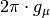

CalMuonDetectorPhases dialog.
Table of Contents
| Name | Direction | Type | Default | Description |
|---|---|---|---|---|
| InputWorkspace | Input | MatrixWorkspace | Mandatory | Name of the reference input workspace |
| FirstGoodData | Input | number | Optional | First good data point in units of micro-seconds |
| LastGoodData | Input | number | Optional | Last good data point in units of micro-seconds |
| Frequency | Input | number | Optional | Starting hint for the frequency |
| DetectorTable | Output | TableWorkspace | Mandatory | Name of the TableWorkspace in which to store the list of phases and asymmetries |
| DataFitted | Output | WorkspaceGroup | Mandatory | Name of the output workspace holding fitting results |
| ForwardSpectra | Input | int list | The spectra numbers of the forward group. If not specified will read from file. | |
| BackwardSpectra | Input | int list | The spectra numbers of the backward group. If not specified will read from file. |
Calculates detector asymmetries and phases from a reference dataset. The algorithm fits each of the spectra in the input workspace to:

where  is shared across spectra and
is shared across spectra and  and
and  are
detector-dependent.
are
detector-dependent.
Before the spectra are fitted, is determined by grouping the detectors,
calculating the asymmetry and fitting this to get the frequency. This value of
is then treated as a fixed constant when fitting the spectra to the function above.
The algorithm outputs a table workspace containing the detector ID, the asymmetry and the phase. This table is intended to be used as the input PhaseTable to PhaseQuad. In addition, the fitting results are returned in a workspace group, where each of the items stores the original data (after removing the exponential decay), the data simulated with the fitting function and the difference between data and fit as spectra 0, 1 and 2 respectively.
There are five optional input properties: FirstGoodData and LastGoodData define the fitting range.
When left blank, FirstGoodData is set to the value stored in the input workspace and LastGoodData
is set to the last available bin. The optional property Frequency allows the user to select an
initial value for (a starting value for the fit). If this property is not supplied, the
algorithm takes this value from the sample_magn_field log multiplied by , where
 is the muon gyromagnetic ratio (0.01355 MHz/G).
Finally, the optional properties ForwardSpectra and BackwardSpectra are the sets of spectra in the
forward and backward groups. If these are not supplied, the algorithm will find the instrument from the
input workspace and use the default grouping for this instrument.
is the muon gyromagnetic ratio (0.01355 MHz/G).
Finally, the optional properties ForwardSpectra and BackwardSpectra are the sets of spectra in the
forward and backward groups. If these are not supplied, the algorithm will find the instrument from the
input workspace and use the default grouping for this instrument.
Note
To run these usage examples please first download the usage data, and add these to your path. In MantidPlot this is done using Manage User Directories.
Example - CalMuonDetectorPhases
# Load four spectra from a muon nexus file
ws = Load(Filename='MUSR00022725.nxs', SpectrumMin=1, SpectrumMax=4)
# Calibrate the phases and amplituds
detectorTable, fittingResults = CalMuonDetectorPhases(InputWorkspace='ws', LastGoodData=4, ForwardSpectra="1,2", BackwardSpectra="3,4")
# Print the result
print "Detector 1 has phase %f and amplitude %f" % (detectorTable.cell(0,2), detectorTable.cell(0,1))
print "Detector 2 has phase %f and amplitude %f" % (detectorTable.cell(1,2), detectorTable.cell(1,1))
print "Detector 3 has phase %f and amplitude %f" % (detectorTable.cell(2,2), detectorTable.cell(2,1))
print "Detector 4 has phase %f and amplitude %f" % (detectorTable.cell(3,2), detectorTable.cell(3,1))
Output:
Detector 1 has phase 0.620299 and amplitude 0.133113
Detector 2 has phase 0.399003 and amplitude 0.134679
Detector 3 has phase 0.214079 and amplitude 0.149431
Detector 4 has phase 0.086315 and amplitude 0.152870
Categories: Algorithms | Muon